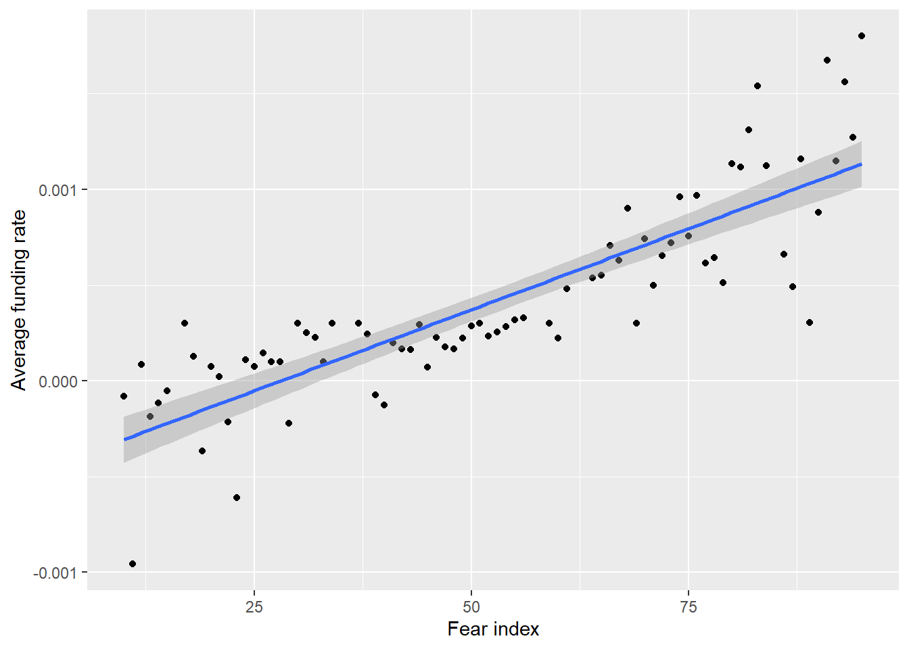
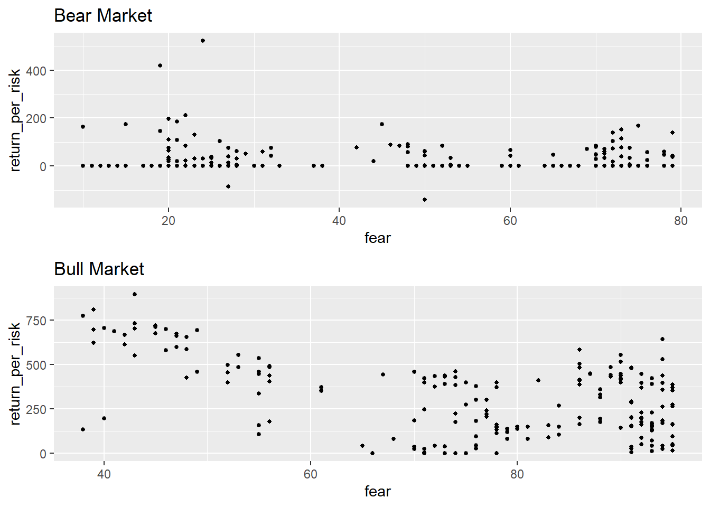

Chapter 5 Results
Basis trading rate of return mainly consists of two parts: earn/loss from funding rate, earn/loss from basis.
Funding rate: as we mentioned in the introduction, funding rate is extremely important in the basis trading. The main idea of the basis trading is hedging, thus we have to open long positions and short positions at the same time. We have to use the perpetual swap to add leverages, so the accumulation of funding rate with high leverage would be a large amount of money.
Basis: as we mentioned in the introduction, basis is the ratio of price difference between future swap and perpetual swap. It is calculated by (future_swap_price - perpetual_swap_price) / perpetual_swap_price.
When hedging, we will long basis or short basis. There, funding rates are unknown variables, but the basis is known. Long basis means we would lose money when basis is decreasing and earn money when funding rate is positive. When we short basis, we have to pay when the funding rate is positive but profit after the basis decreases.
In the results part, we would introduce how to long/short basis if you want long term hold. In the interactive, we would introduce how to long/short basis for short term hold.
5.1 How to pick the right time long/short basis?
We defined “BTC contract 210924” as bear market condition, “BTC contract 210326” as bull market and ploted basis vs funding rate under different market conditions.
5.1.1 funding rate vs basis

The higher funding rate accompanies a high basis. Every time the basis got a sudden drop, the funding rate would drop below 0.1%. Under extreme market condition, like May 18, accompanied with 30% drop of btc price, the funding rate turned into negative for several days.
Also, as mentioned in the introduction, the value of basis is highly related to the remaining days of the contract. Even though the funding fee is extremely high at the tail of the contract, the basis would still gradually converge to zero.
5.1.2 Accumulation of funding rate vs basis
The accumulation of funding rate is calculated as the sum of funding rate from today until the expiration date. It directly represents how much we pay/earn by the funding rate.
 In a bull market, the accumulation of funding rate is never lower than the basis. If we kept longing basis until the expiration of the contract, the return would be calculated as (“accumulation_of_funding_rate” - “basis”). Thus, in the bull market, the long term holding the basis would be a wise decision.
In a bull market, the accumulation of funding rate is never lower than the basis. If we kept longing basis until the expiration of the contract, the return would be calculated as (“accumulation_of_funding_rate” - “basis”). Thus, in the bull market, the long term holding the basis would be a wise decision.
However, the sudden drop of price would lead to serious loss. From the figure, when market crashed in May, the long basis position will suffer huge loss.
5.1.3 Trading Return
If our trading strategy designed as using 2*leverage to long the basis on bear market/bull market and holding until the contract expired, the return ratio would look at below.
The return means if you long basis in that date, you will receive % return when the contract expired.
From the figures, we know that if we want long term holding position, the return ratio highly depends on the market conditions. Because the maximum leverage in crypto market is 125, if we know the right time to enter the market, the basis trading will be very profitable.
The figures above tell us don’t short the basis in bull market. Shorting basis can make profit when whole market crushed, but it is not a good idea to long term holding short basis position when the basis is not so high due to accumulating of funding rate is huge.
5.2 The factors affect the long term basis trading return
The main idea of our trading strategy is to find the right time to open the basis trading position. We explore basis trading return from three different aspects: Market Emotion, History Basis and Volatility.
5.2.1 Market Emotional
Use fear-and-greed index to describe the Market emotion
The fear-and-greed index was produced by analyzing the current sentiment of the Bitcoin market and crunch the numbers into a simple meter from 0 to 100. Zero means “Extreme Fear”, while 100 means “Extreme Greed”.
#### Fear index vs Funding rate
 In the figure, the x-axis is the value of fear index, the y-axis is the average funding rate group by fear index. Under more than 480 samples, the linear regression get R-square is more 7.7. Thus, we can tell that there is strong positive correlation between fear index and funding rate.
In the figure, the x-axis is the value of fear index, the y-axis is the average funding rate group by fear index. Under more than 480 samples, the linear regression get R-square is more 7.7. Thus, we can tell that there is strong positive correlation between fear index and funding rate.
5.2.1.1 Fear index vs Return per risk
In extreme fear market(fear index < 30), the average funding rate in 40 days is around 0. Thus, we will assume the funding rate is around 0 in fear market.
The risk of long-term-holding the long basis position can be calculated. Going long basis, the known risk is the current basis and the unknown risk is the future funding rate. Based on pre-calculating, the funding rate is nearly zero in fear market. Thus, the main risk on basis trading is the basis. The pleasant time to open the position is low basis and high final return.
Thus, we use return_per_risk = “final return” / “basis”, if final_return < 0, then final_return = 0
 The figure is not that so persuasive, but we still can see that in bull market, the lower fear index, the higher return ratio per risk.
5.2.2 Volatility vs Trading Return
Volatility is the degree of variation of a trading price series over time. We assume when the volatility is extreme high, many position in crypto market would be liquidated which would lead to extreme basis.
 From the figure, we can see that in the bull market, lower the volatility represents higher return per risk. High Volatility in bull market might from the sudden increase of the price, then the basis would increase and then led low return per risk.
5.2.3 Anuual basis vs return per risk
Anuual basis was designed to eliminate the effect of expiration date. It is a better indicator than the original basis.
Anuual basis = basis / remain date * 365
The annual basis seems a good estimator of the return per risk. From the figure we can see, the smaller annual basis is, the higher return per risk even in bear market.
5.3 How fundamental affect crypto market?
5.3.1 Whale Accumulation
Setting the threshold to 1000, that is, investors holding 1000 BTC or more are considered as whales, and we get the line chart above. As we try to make our exploration more instructive to reality, we focus data after Oct 2020, which is the most recent and the price of BTC changed fluently. As we can see, basically， the buying of whales indicates the increment of BTC price.
Let us track more detailedly At the end of 2020, whales tended to buy BTC in Oct, Nov, Dec three periods, and then the price increased consistently around the January 2021. Later, the amount of BTC held by whales increased rapidly in the middle of Jan, which is not quite common. Meanwhile, BTC price went through a long term rise, which lasted until Apr 2021. After that, several whales’ buying trends in late April and early Jun both corresponded to a rise, or a stopped decline. Then, what we have to notice is the whales’ buying in Jul 2021, which may not be quite large amount but still lasted for a considerable period. It could actually tell the rebound of BTC price after mid July.
At last, the number of BTC held by whales increased again after late September and late October this year. Although this may not be persuasive enough to be an evidence because we still need more time to verify, while the price does go up generally in current.
5.3.2 Long Term Holder Behaviors
After plotting supply of LTH with BTC price, we can see a rule that LTH tend to start selling down the get profit soon after bull market arrives and accumulate BTC during bear market. We can clearly see such rule in the data at the end of 2017 and the start of 2018. Actually, more recently, the rule still held from the end of 2018 to the mid of 2021. However, after that, it turns out to be different because the number of BTC held by LTH increased as BTC price rose. We assume that LTH still remain optimistic toward BTC market ar present and also, probably more and more people are inclined to be more patient and join as a LTH.
In conclusion, through observing and summarizing historical behavior of whales and long-term holders, we can understand more about the market rules better and design a better strategy